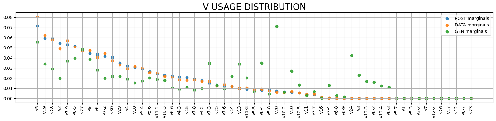

SoNNia Tutorial
import os import sonia from sonnia.sonnia import SoNNia from sonnia.sonia import Sonia from sonnia.plotting import Plotter from sonnia.processing import Processing import numpy as np import pandas as pd
Load lists of sequences with gene specification
[2]:
# this assume data sequences are in semi-colon separated text file, with gene specification
data_seqs = pd.read_csv('data_seqs.csv.gz')
# preprocess data
processor=Processing(pgen_model='humanTRB')
filtered=processor.filter_dataframe(data_seqs)
data_seqs=filtered.values.astype(str)
print(len(data_seqs))
data_seqs[:3]
bad genes: 0
unproductive: 0
wrong bounds: 0
long cdr3s: 0
200000
[2]:
array([['CASSKQGASEAFF', 'TRBV7-8', 'TRBJ1-1'],
['CASSPPPNYGYTF', 'TRBV6-1', 'TRBJ1-2'],
['CASSTDTTEAFF', 'TRBV6-5', 'TRBJ1-1']], dtype='<U26')
Define and infer model
[3]:
qm = SoNNia(data_seqs=data_seqs,pgen_model='humanTRB')
2024-07-11 11:11:17,269: Adding data seqs.
2024-07-11 11:11:17,445: Encode data seqs.
Metal device set to: Apple M3 Pro
100%|████████████████████████████████████████████████████████████████████████| 200000/200000 [00:01<00:00, 106789.98it/s]
[6]:
# add generated sequences (you can add them from file too)
qm.add_generated_seqs(int(5e5))
2024-07-11 10:30:37,058: Generating 500000 using the pgen model in /Users/giulioisac/Documents/GitHub/soNNia/sonnia/default_models/human_T_beta.
2024-07-11 10:30:41,514: Adding gen seqs.
2024-07-11 10:30:41,675: Encode gen seqs.
100%|█████████████████████████████████████████████████████████████████████████| 500000/500000 [00:05<00:00, 95594.01it/s]
[7]:
#define and train model
qm.infer_selection(epochs=50,batch_size=int(5e3))
Do some plotting
[12]:
plot_sonia=Plotter(qm)
plot_sonia.plot_model_learning()

[13]:
plot_sonia.plot_vjl()


Generate sequences
[14]:
pre_seqs=qm.generate_sequences_pre(int(1e4))
pre_seqs[:3]
100%|███████████████████████████████████████████████████████████████████████████| 10000/10000 [00:00<00:00, 25094.87it/s]
[14]:
array([['CASSRGGYEQYF', 'TRBV3-1', 'TRBJ2-7'],
['CASSAAGGSSYEQYF', 'TRBV7-3', 'TRBJ2-7'],
['CASRASTGTVAEQYF', 'TRBV6-2', 'TRBJ2-7']], dtype='<U78')
[15]:
post_seqs=qm.generate_sequences_post(int(1e4))
post_seqs[:3]
[15]:
array([['CASRSGGSGNTIYF', 'TRBV6-5', 'TRBJ1-3'],
['CASSEGLADTQYF', 'TRBV6-1', 'TRBJ2-3'],
['CASKKVRTLEALEQFF', 'TRBV2', 'TRBJ2-1']], dtype='<U90')
Evaluate sequences
[16]:
Q_data,pgen_data,ppost_data=qm.evaluate_seqs(qm.data_seqs[:int(1e4)])
Q_gen,pgen_gen,ppost_gen=qm.evaluate_seqs(pre_seqs)
Q_model,pgen_model,ppost_model=qm.evaluate_seqs(post_seqs)
print(Q_model[:3]),
print(pgen_model[:3])
print(ppost_model[:3])
[6.6892633 3.1299226 0.6382268]
[3.36972355e-08 6.66253476e-08 3.53022869e-17]
[2.25409682e-07 2.08532183e-07 2.25308658e-17]
[17]:
plot_sonia.plot_prob(data=pgen_data,gen=pgen_gen,model=pgen_model,ptype='P_{pre}')

[18]:
plot_sonia.plot_prob(ppost_data,ppost_gen,ppost_model,ptype='P_{post}')

[19]:
plot_sonia.plot_prob(Q_data,Q_gen,Q_model,ptype='Q',bin_min=-4,bin_max=2)

Import some utils inherited from OLGA
[20]:
# olga functionality can be directly accessed through the main SoNNia model
[21]:
qm.seqgen_model.gen_rnd_prod_CDR3()
[21]:
('TGCGCCAGCAGCCCCTCCCCGCGGGAAGGATGCAATCAGCCCCAGCATTTT',
'CASSPSPREGCNQPQHF',
45,
4)
[22]:
qm.genomic_data.genJ[1]
[22]:
['TRBJ1-2*01',
'CTAACTATGGCTACACCTTC',
'CTAACTATGGCTACACCTTCGGTTCGGGGACCAGGTTAACCGTTGTAG']
[23]:
qm.pgen_model.PinsDJ
[23]:
array([6.17437e-02, 3.61889e-02, 9.09608e-02, 1.05828e-01, 1.37586e-01,
1.14643e-01, 9.60481e-02, 8.14864e-02, 6.38634e-02, 4.92164e-02,
3.93751e-02, 2.90524e-02, 2.30059e-02, 1.64381e-02, 1.45157e-02,
1.13759e-02, 5.79127e-03, 5.97164e-03, 3.92779e-03, 2.96191e-03,
2.04381e-03, 2.48417e-03, 9.09996e-04, 1.35102e-03, 2.44798e-04,
4.52171e-04, 9.17052e-04, 6.28282e-04, 0.00000e+00, 1.41295e-05,
9.74155e-04, 0.00000e+00, 0.00000e+00, 0.00000e+00, 0.00000e+00])
Save and Load Model
[24]:
qm.save_model('test')
[25]:
qm_new=SoNNia(ppost_model='test')
Cannot find data_seqs.tsv -- no data seqs loaded.
Cannot find gen_seqs.tsv -- no generated seqs loaded.
[26]:
# By default sequences are not added. Adding them now.
qm_new.update_model(add_data_seqs=qm.data_seqs,add_gen_seqs=qm.gen_seqs)
2024-07-11 10:36:27,954: Adding data seqs.
2024-07-11 10:36:27,982: Using default index (0) for amino acid CDR3 sequences.
2024-07-11 10:36:27,983: Using default index (1) for V genes.
2024-07-11 10:36:27,983: Using default index (2) for J genes.
2024-07-11 10:36:28,032: 200000 sequences before filtering. Using test for filtering.
2024-07-11 10:36:28,045: 200000 sequences remain after removing sequences with V genes inconsistent with the model.
2024-07-11 10:36:28,054: 200000 sequences remain after removing sequences with J genes inconsistent with the model.
2024-07-11 10:36:28,095: 200000 sequences remain after removing data which are unproductive amino acid sequences.
2024-07-11 10:36:28,165: 200000 sequences remain after removing sequences that do not begin with a 'C' or end in a ['A', 'B', 'C', 'E', 'D', 'F', 'G', 'H', 'I', 'J', 'K', 'L', 'M', 'N', 'O', 'P', 'Q', 'R', 'S', 'T', 'U', 'V', 'W', 'X', 'Y', 'Z'].
2024-07-11 10:36:28,200: 200000 sequences remain after removing sequences with CDR3 length larger than 30.
2024-07-11 10:36:28,200: 200000 sequences remain. Filtering completed.
2024-07-11 10:36:28,303: Adding gen seqs.
2024-07-11 10:36:28,429: Encode data seqs.
100%|█████████████████████████████████████████████████████████████████████████| 200000/200000 [00:02<00:00, 98111.46it/s]
2024-07-11 10:36:30,676: Encode gen seqs.
100%|█████████████████████████████████████████████████████████████████████████| 500000/500000 [00:05<00:00, 91856.90it/s]
[27]:
# Continue inference
qm_new.infer_selection(epochs=5)
qm_new.learning_history.history
[27]:
{'loss': [-0.917634129524231,
-0.9297581911087036,
-0.9374640583992004,
-0.9420860409736633,
-0.9480760097503662],
'_likelihood': [-0.9459818601608276,
-0.9519134163856506,
-0.9565053582191467,
-0.9614313244819641,
-0.965249240398407],
'val_loss': [-0.9218994379043579,
-0.9534543752670288,
-0.9493811130523682,
-0.9589893817901611,
-0.9295039176940918],
'val__likelihood': [-0.9583306312561035,
-0.9630382657051086,
-0.9619290232658386,
-0.9621008634567261,
-0.9700673818588257]}
Compute Diversity and Distance from Reference Distribution
[28]:
print('model entropy is: ', qm_new.entropy(), '[bits]')
model entropy is: 30.31072030773339 [bits]
[29]:
print('Dkl post gen is: ', qm_new.dkl_post_gen(), '[bits]')
Dkl post gen is: 1.3313388 [bits]
Load Default Sonia Models
[30]:
# load beta model
beta_default_model=Sonia(ppost_model='humanTRB')
Cannot find data_seqs.tsv -- no data seqs loaded.
Cannot find gen_seqs.tsv -- no generated seqs loaded.